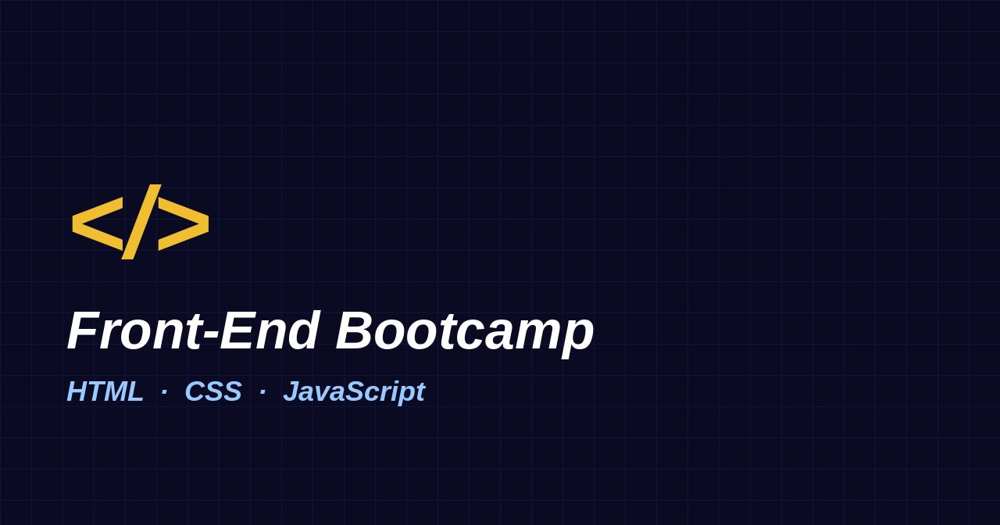

لماذا أتعلم HTML أولاً؟
لأنها الأساس الذي تُبنى عليه كل صفحة ويب، وكل ما بعدها يعتمد عليها.
الساعة الأولى · قناة freeCodeCamp العربية
أول خطوة في معسكر تطوير الواجهات الأمامية. نبني معاً صفحة كاملة من الصفر، ونتعلّم كل وسم بالتجربة، ثم نضيف التنسيق بلغة CSS والتفاعل بلغة JavaScript.

الدرس 01
HTML اختصار لـ HyperText Markup Language، أي لغة ترميز النص التشعبي. هي ليست لغة برمجة، بل لغة وصف: نخبر بها المتصفح أن هذا عنوان، وهذه فقرة، وهذا رابط.
مرحباً بك في عالم HTML! كل موقع زرته في حياتك مبني فوق هذه اللغة.
هذه فقرة ثانية فيها نص عريض، وهذه كلمة مائلة للتأكيد.
اضغط على كل تبويب لترى دور كل لغة. هذا المكوّن نفسه مثال على تعاون اللغات الثلاث.
HTML هي الهيكل العظمي للصفحة: العناوين والفقرات والصور والروابط والنماذج.
CSS هي الملابس: الألوان والخطوط والمسافات وترتيب العناصر على الشاشة.
JavaScript هي العضلات: ما يحدث عند النقر والكتابة والتمرير.
الدرس 02
كل صفحة HTML تبدأ بالقالب نفسه تقريباً. احفظه جيداً، فستكتبه آلاف المرات.
<!DOCTYPE html>
<html lang="ar" dir="rtl">
<head>
<meta charset="UTF-8">
<meta name="viewport" content="width=device-width, initial-scale=1.0">
<title>صفحتي الأولى</title>
</head>
<body>
<h1>مرحباً بالعالم</h1>
</body>
</html>| الجزء | وظيفته |
|---|---|
<!DOCTYPE html> | يخبر المتصفح أن الصفحة مكتوبة بمعيار HTML5. |
<html> | العنصر الجذر الذي يحتوي كل شيء. |
<head> | معلومات عن الصفحة لا تظهر في محتواها: الترميز والعنوان والأنماط. |
<body> | كل ما يراه الزائر على الشاشة. |
الدرس 03
العناوين من h1 إلى h6 ترسم خريطة الصفحة.
لا تختر العنوان بسبب حجمه، بل بسبب مكانه في الترتيب، والحجم نتحكم فيه لاحقاً بـ CSS.
الويب يعتمد على ثلاث لغات: HTML وCSS وJavaScript.
المتصفح يقرأ الملف
ثم يبني شجرة العناصر
ثم يرسم الصفحة.
المسافات الكثيرة تُختصر إلى مسافة واحدة.
الأسطر الجديدة
استخدم <br> داخل العناوين البريدية والقصائد فقط، وليس لصنع مسافات.
العناوين بالترتيب
لا تقفز من h2 إلى h5. قارئ الشاشة يتنقّل في الصفحة عبر العناوين.
الدرس 04
كل وسم هنا يحمل معنى، والشكل مجرد نتيجة جانبية.
code لمقطع برمجي قصير مثل console.log().abbr للاختصارات، مرّر المؤشر لترى المعنى.time: بدأ المعسكر في .q لاقتباس قصير داخل السطر: قال المعلّم تعلّم بالتجربة.
للتواصل مع فريق المعسكر: hello@example.comأفضل طريقة لتعلّم البرمجة هي أن تبني أشياء حقيقية، وأن تخطئ فيها، ثم تصلحها.
الدرس 05
الرابط يحتاج شيئين: عنواناً في href، ونصاً واضحاً يصف وجهته.
الدرس 06
الصورة عنصر فارغ لا يُغلق، وأهم سماتها src وalt.
مسار مطلق (من الإنترنت)

مسار نسبي (من مجلد المشروع)
assets/images/logo.svg يبدأ من مكان الملف الحالي.مسار خاطئ (يظهر نص alt)

صورة داخل رابط
إذا كانت الصورة للزينة فقط، اكتب alt="" فارغاً ولا تحذف السمة نفسها.
حذفها يجعل بعض قارئات الشاشة تقرأ اسم الملف بصوت عالٍ.
الدرس 07
ثلاثة أنواع: غير مرتبة ul، ومرتبة ol، ووصفية dl.
<p>.href في الروابط.الدرس 08
للبيانات المرتبة في صفوف وأعمدة فقط، وليس لتخطيط الصفحة.
| الساعة | الموضوع | المدة | المستوى |
|---|---|---|---|
| الأولى | الأساسيات | 30 دقيقة | مبتدئ |
| الجداول والدلالية | 30 دقيقة | مبتدئ | |
| الثانية | النماذج والوسائط | متوسط | |
| المجموع | ساعتان | ||
اكتب في خانة البحث لتصفية الصفوف، أو اضغط على عنوان أي عمود لترتيبه.
| 1 | أساسيات HTML | 4 | مبتدئ |
| 2 | النماذج والوسائط وHTML الدلالي | 4 | مبتدئ |
| 3 | أساسيات CSS والمحددات | 5 | مبتدئ |
| 4 | نموذج الصندوق والتخطيط بـ Flexbox | 5 | متوسط |
| 5 | Grid والتصميم المتجاوب | 5 | متوسط |
| 6 | أساسيات JavaScript | 6 | مبتدئ |
| 7 | التعامل مع DOM والأحداث | 6 | متوسط |
| 8 | Fetch والتخزين المحلي والمشروع النهائي | 5 | متقدم |
لا توجد نتائج مطابقة لبحثك.
الدرس 09
نموذج تسجيل حقيقي يستخدم أهم أنواع الحقول وقواعد التحقق المدمجة في المتصفح.
الدرس 10
وسوم video وaudio وiframe تجلب الوسائط والمواقع الأخرى إلى صفحتك.
فيديو
صوت
تضمين خريطة باستخدام iframe
الدرس 11
اختر الوسم الذي يصف المعنى، وليس الوسم الذي يعطيك الشكل.
لأنها الأساس الذي تُبنى عليه كل صفحة ويب، وكل ما بعدها يعتمد عليها.
HTML للهيكل والمعنى، وCSS للمظهر والتخطيط.
الوسمان details وsummary يصنعان قائمة قابلة للطي من HTML فقط.
نعم. واحد للموقع كله، وواحد داخل كل article أو section إذا احتجت.
استخدم section عندما يكون للجزء عنوان خاص به ومعنى واضح. وdiv للتجميع من أجل التنسيق فقط.
مرة واحدة فقط في كل صفحة.
الوسم dialog يعطيك نافذة منبثقة جاهزة، تُغلق بمفتاح Esc ويبقى التركيز داخلها.
الدرس 12
كيف تكتب علامة < في صفحتك دون أن يظنها المتصفح بداية وسم؟
| الرمز | ما تكتبه | الاستخدام |
|---|---|---|
| < | < | أصغر من |
| > | > | أكبر من |
| & | & | علامة العطف |
| " | " | علامة تنصيص داخل قيمة سمة |
| © | © | حقوق النشر |
| (مسافة) | | مسافة لا تنكسر، تبقي كلمتين على السطر نفسه |
الدرس 13
ما في داخل head لا يراه الزائر، لكن تراه محركات البحث ومنصات التواصل.
| الوسم | من يقرؤه | الفائدة |
|---|---|---|
title | المتصفح ومحركات البحث | عنوان التبويب والرابط في نتائج البحث. |
meta description | محركات البحث | الوصف تحت الرابط في النتائج. |
link canonical | محركات البحث | العنوان الأصلي للصفحة لتجنّب التكرار. |
og:* | فيسبوك وواتساب ولينكدإن | بطاقة المعاينة عند مشاركة الرابط. |
twitter:* | منصة X | نوع البطاقة وصورتها. |
theme-color | متصفحات الجوال | لون شريط العنوان. |
application/ld+json | محركات البحث | بيانات منظمة لنتائج أغنى. |
الدرس 14
موقعك يجب أن يعمل للجميع: بالفأرة ولوحة المفاتيح وقارئ الشاشة وعلى الشاشات الصغيرة.
جرّب الآن: اضغط Tab عدة مرات من أعلى الصفحة. أول ما يظهر هو رابط "انتقل إلى المحتوى الرئيسي".
مساحة تجريبية
اكتب أي HTML في المحرر واضغط "تشغيل". جرّب أن تكسر الأشياء، فهكذا نتعلم.
المعاينة
اختبر نفسك
خمسة أسئلة سريعة عن الساعة الأولى.
التحدي النهائي
اجمع كل ما تعلمته في بطاقة واحدة: صورة وعناوين وقائمة وجدول وروابط.
مطوّر ويب مبتدئ
أتعلم تطوير الويب مع freeCodeCamp، وهدفي بناء أول موقع خلال شهر.
| الأسبوع | الموضوع |
|---|---|
| 1 | HTML |
| 2 | CSS |
| 3 | JavaScript |